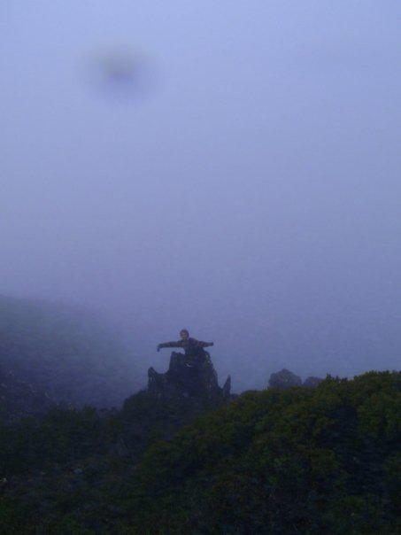
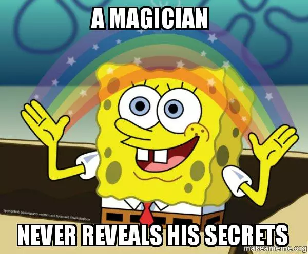
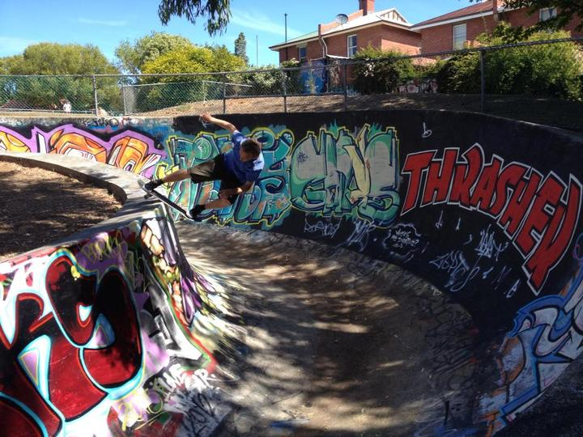
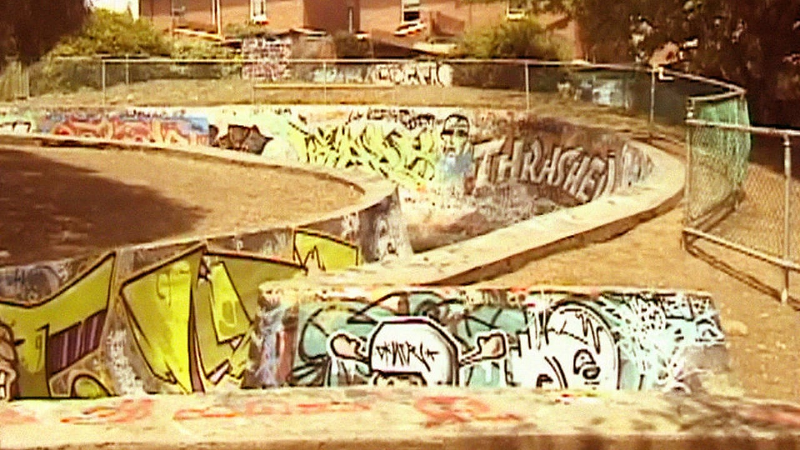
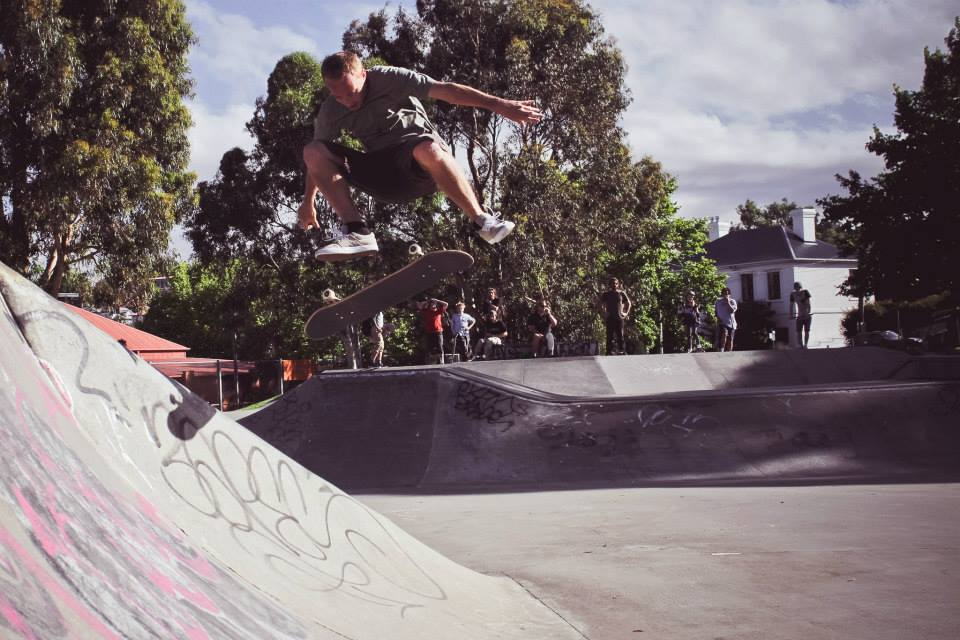

03 · Nature
Looking beyond the terminal.



Off screen / experiments and outside
When I’m not building software or pulling apart a mathematical problem, I’m usually experimenting with generative colour, skateboarding or getting outside with a camera.
01 · Generative art
I use C and C++ with OpenCV to treat existing images and video as a canvas, transform pixel colour through custom RGB/HSV routines, and assemble generated frames with FFmpeg. The interesting part is finding a simple mathematical rule that produces an unexpectedly alive result.

HUE_SHIFT.FRAME_036002 · Skateboarding



03 · Nature
